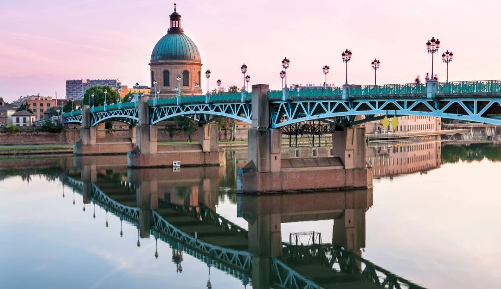

About Me
My name is Alexandre de la Vega. I was born in Mexico, but I currently live in Toulouse, France. I am currently working as a buyer, but I aspire to redirect my professional future toward software development.

Toulouse, France
Toulouse is a beautiful city in the south of France. It is the fourth largest city in the country. Often referred to as the capital of European aeronautics, it is home to the headquarters of Airbus, the renowned aircraft manufacturer. Toulouse is also proud of its famous rugby team, Le Stade Toulousain, which is the current European champion.
